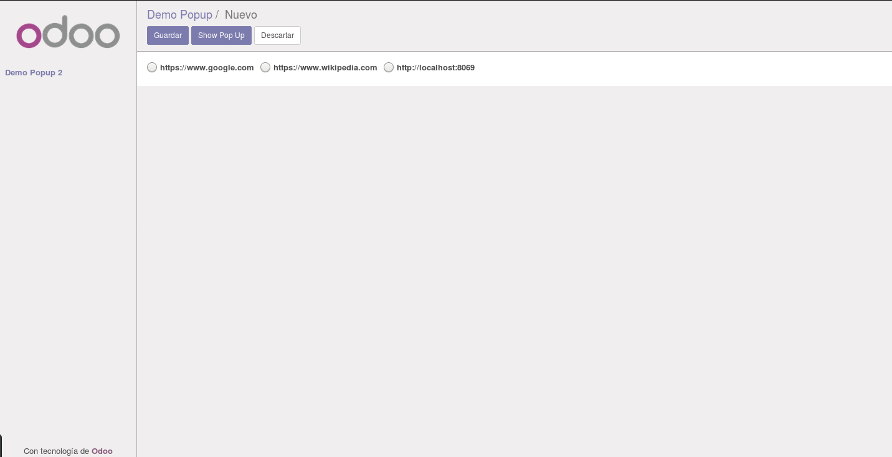
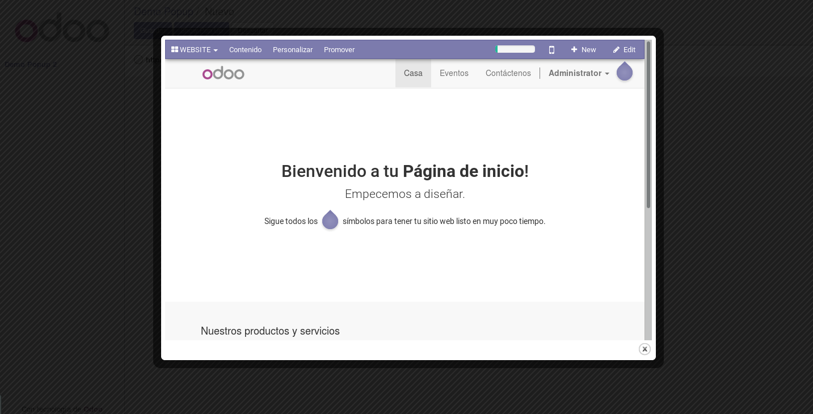

<section class="oe_container">
    <div class="oe_row oe_spaced">
        <h2 class="oe_slogan" style="color:#875A7B;">Show a button in all the Forms views<br/>in Backend view to get a PopUp View</h2>
        <div class="oe_span6">
            <p class="oe_mt32">
            <strong><h3>You should set a selection field in the model with the format URL:dns_address</h3></strong><br/>
            urls = fields.Selection(string="URLs",
            selection = [("URL:https://www.google.com", "Google (https://www.google.com)"),
            ("URL:https://www.wikipedia.com", "Wikipedia (https://www.wikipedia.com)"),
            ("URL:http://localhost:8069", "Localhost (http://localhost:8069)")])<br/><br/>
            </p>
            
            <p class="oe_mt32">
            <strong><h3>And set the selection field with widget="radio" in the view:</h3></strong><br/>
            &lt;field name="urls" options="{'horizontal': true}" widget="radio"/&gt;<br/><br/>
            </p>
            
            <p class="oe_mt32">
            <strong><h3>Or set the property URL="https://www.wikipedia.com" in the 'form' tag:</h3></strong><br/>
            &lt;form string="Form title one" URL="https://www.wikipedia.com" URL-width="900" URL-height="600"&gt;<br/> 
                ...<br/>
                ...<br/>
            &lt;form/&gt;
            </p>
            
            <p class="oe_mt32">
                <h3>The result is the next one:</h3><br/><br/>
            </p>
            <div class="oe_span6">
                
            </div>
            <div class="oe_span6">
                
            </div>
        </div>
    </div>
</section>
